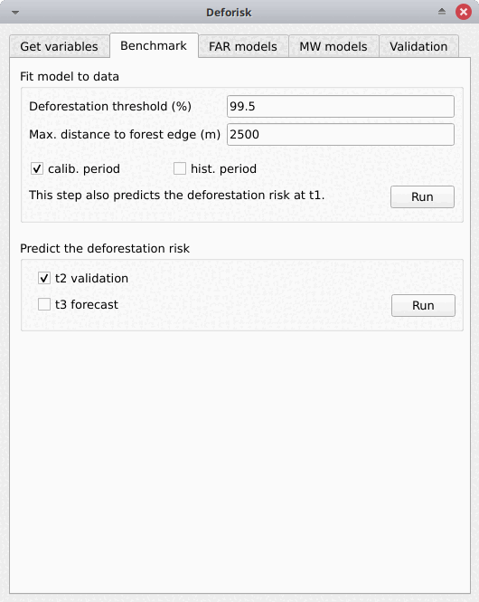
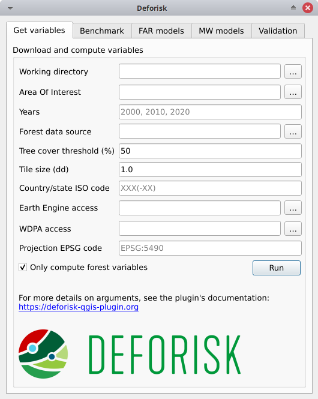

API du plugin#
Interface du plugin#
L’interface du plugin affiche cinq onglets : Get variables, Benchmark, FAR models, MW models et Validation. Chaque onglet comprend une ou plusieurs boîtes. Par exemple, l’onglet FAR models comprend trois boîtes : Sample observations, Fit model to data et Predict the deforestation risk. Les arguments de chaque onglet ou boîte sont détaillés ci-dessous. Ils correspondent généralement aux paramètres des fonctions inclues dans les packages Python utilisés par le plugin deforisk.
Obtenir des variables (Get variables)#
Télécharger et calculer les variables (Download and compute variables)#
Cette case permet de collecter les informations nécessaires au téléchargement des données et au calcul des variables qui seront utilisées pour modéliser spatialement le risque de déforestation pour une zone d’intérêt donnée.
Working directory: Répertoire de travail. Chemin d’accès au répertoire de travail où toutes les données et les résultats du modèle seront stockés.Area Of Interest: Zone d’étude cible. Code ISO 3166-1 alpha-3 du pays (par exemple MTQ) ou chemin d’accès au fichier vectoriel GPKG en lat/lon délimitant la zone d’étude (juridiction) et les sous juridictions. Le fichier vectoriel GPKG doit inclure deux couches, la première doit être nommée « aoi » pour la juridiction et la seconde doit être nommée « subj » pour les sous juridictions. Ce fichier vectoriel GPKG peut être obtenu manuellement à l’aide des outils QGIS et des données du site web Global Administrative Areas (GADM). Un exemple est donné dans l’article suivant sur l’utilisation des Juridictions infranationales.Years: Années délimitant les deux périodes (périodes de calibration et de validation) pour les observations des changements du couvert forestier. Trois années doivent être fournies. Les années peuvent se situer dans l’intervalle 2001–2024 pour GFC (GFC ne fournit pas de perte de couvert forestier pour l’année 2000) et 2000–2023 pour TMF. Les années doivent correspondre aux données de changement du couvert forestier si un fichier raster est fourni dansForest data source.Forest data source: Source des données forestières. Il peut s’agir de « tmf », « gfc » ou d’un chemin d’accès à un fichier raster multibande valide sur les changements de couvert forestier (voir données de l’utilisateur).Tree cover threshold (%): Seuil de couverture arborée. Pourcentage de couvert arboré utilisé pour définir la forêt lors de l’utilisation de GFC.Tile size (dd): Taille de la tuile (en degrés décimaux) utilisée pour télécharger les changements du couvert forestier. Une valeur de 1 degré est recommandée.Country/state ISO code: Code ISO du pays ou de l’état utilisé pour télécharger les données GADM, OSM, SRTM et WDPA. Le code ISO doit correspondre au pays auquel appartient la zone d’étude (aoi) indiquée dans la rubrique « Area Of Interest » (zone d’étude cible). Pour les États brésiliens, utilisez le code de l’État sous la forme « BRA-XX » (par exemple, « BRA-AM » pour l’État d’Amazonas). Une liste de codes pouvant être utilisés avec le plugindeforiskse trouve dans ce fichier .tsv (voir colonne iso3).Earth Engine access: Nom d’un projet Google Cloud enregistré pour utiliser Earth Engine (et pour lequel vous êtes identifié en tant qu’utilisateur) ou un chemin vers un fichier de clé privée JSON vous autorisant à accéder à Earth Engine via un compte de service. Si un fichier raster est fourni dansForest data source, aucune donnée ne sera téléchargée depuis GEE et cet argument peut être laissé vide.WDPA access: Token API personnel (une série de lettres et de chiffres comme ca4703ffba6b9a26b2db73f78e56e088) ou un chemin vers un fichier texte spécifiant la valeur de la variable d’environnement « WDPA_KEY » (par exemple, un simple fichier texte incluant sur une ligneWDPA_KEY="3e404871700e77c453c4e189d848f739"par exemple). Si l’optionOnly compute forest variablesest cochée, aucune donnée ne sera téléchargée depuis WDPA et cet argument peut être laissé vide.Projection EPSG code: Code EPSG du système de référence des coordonnées utilisé pour la projection des cartes.Only compute forest variables: Si cette option est cochée (par défaut), seules les variables forestières sont calculées. Par variables forestières, nous entendons les rasters de changement de couverture forestière avec les catégories 1, 2, 3 (1 : déforestation pendant la première période, 2 : déforestation pendant la deuxième période, et 3 : forêt restante à la fin des deux périodes) et les rasters de distance à la lisière de la forêt aux différentes dates. Aucune autre variable explicative ne sera téléchargée à partir d’Internet ni calculée (c’est-à-dire les variables dérivées de SRTM, WDPA ou OSM). Utilisez ceci (i) pour des tests afin d’évaluer un modèle avec seulement la distance à la lisière de la forêt comme variable explicative, ou (ii) si vous voulez utiliser vos propres données et non les données disponibles dans les jeux de données globaux.
Avertissement
Pour les utilisateurs de Windows, choisissez un répertoire de travail avec un chemin court (par exemple C:\Users\<username>\<dirname>). Les longs chemins d’accès aux fichiers peuvent poser des problèmes d’accès aux fichiers sous Windows.
En appuyant sur le bouton Run dans cette boîte, les données seront téléchargées et les variables calculées en arrière-plan. Lorsque l’opération est terminée, une carte des changements du couvert forestier apparaît dans la liste des couches de QGIS et une figure de changement du couvert forestier fcc123.png est créé dans le dossier outputs/variables. De nouveaux dossiers sont créés dans le répertoire de travail :
Six dossiers de données sont créés :
data_raw: données brutes avec fichiers intermédiaires.data: données traitées utilisées pour les modèles et les graphiques.
Les quatre dossiers suivants ne comportent que des liens symboliques afin d’éviter la duplication des données :
data_calibration: données utilisées pour la calibration du modèle sur la période de calibration (t1–t2).data_validation: données utilisées pour prédire le risque de déforestation à t2 et valider les modèles sur la période de validation (t2–t3). Ce dossier utilisé pour la prédiction ne contient pas de fichierfcc.tifmais seulement des fichiers raster de variables explicatives.data_historical: données utilisées pour la calibration du modèle sur la période historique (t1–t3).data_forecast: données utilisées pour prédire le risque de déforestation à t3 et prévoir la déforestation au-delà de t3. Ce dossier ne contient pas non plus de fichierfcc.tif.
Trois autres dossiers sont créés :
outputs: Résultats (figures et tableaux).outputs/variables: Sortie pour les variables.qgis_layer_style: Styles de couche pour QGIS.
Modèle de référence (Benchmark)#

Ajuster le modèle aux données (Fit model to data)#
Cet onglet permet de collecter les informations nécessaires pour cartographier le risque de déforestation à l’aide du modèle de référence de Verra JNR Unplanned Deforestation Allocation (UDef-A) tool. En résumé, le modèle de référence suppose que la déforestation est négligeable au-delà d’une certaine distance à la lisière de la forêt, que le risque de déforestation diminue avec la distance à la lisière de la forêt et que pour une distance donnée à la lisière de la forêt, le risque varie entre les sous-juridictions.
Deforestation threshold (%): Seuil de déforestation cumulée utilisé pour identifier le seuil de distance à la lisière de la forêt. La valeur par défaut est de 99,5 %, comme le suggère la méthodologie UDef-A.Distance max. à la lisière de la forêt (m): Distance maximale à la lisière de la forêt utilisée pour calculer la déforestation cumulée en fonction de la distance à la lisière de la forêt. La valeur par défaut est 2500 m, car la majeure partie de la déforestation devrait se produire en dessous de cette distance. Augmentez ce chiffre si le seuil de 99,5 % pour la déforestation cumulée n’est pas atteint.calib. period: Si cette case est cochée, le modèle est ajusté sur la période de calibration (t1–t2).hist. period: Si cette case est cochée, le modèle est ajusté sur la période historique (t1–t3).
En appuyant sur le bouton Run dans cette case, vous estimerez la distance à la lisière de la forêt au-delà de laquelle le risque de déforestation est considéré comme négligeable. Ce seuil de distance est utilisé pour définir une première classe de risque de déforestation. Ensuite, 29 classes de risque de déforestation sont estimées à partir de la distance à la lisière de la forêt à l’aide d’une série géométrique pour identifier des fourchettes de distance. Les classes présentant des risques de déforestation plus élevés ont des fourchettes de distance à la lisière de la forêt plus étroites. Enfin, un taux de déforestation est estimé pour chacune des 30 classes au sein de chaque sous-juridiction sur la base de la déforestation observée pour la période considérée.
Les dossiers suivants sont créés : outputs/rmj_benchmark/calibration et outputs/rmj_benchmark/historical. Les fichiers suivants sont ajoutés à ces dossiers :
tab_dist.csv: Tableau avec la déforestation cumulée en fonction de la distance à la lisière de la forêt.perc_dist.png: Figure de la déforestation cumulée en fonction de la distance à la lisière de la forêt, montrant le seuil de distance.dist_edge_threshold.csv: Tableau avec le seuil de distance et la déforestation cumulée correspondante (qui doit être \(\geq\) 99.5%).dist_bins.csv: Tableau avec les bins utilisés pour convertir la distance à la lisière de la forêt en 29 classes de risque de déforestation à l’aide d’une série géométrique.subj.tif: Raster des sous-juridictions avec des valeurs allant de 1 à potentiellement 999.prob_bm_t1.tif: Raster avec des classes de risque de déforestation allant de 1001 à potentiellement 30999.prob_bm_t1.png: Figure montrant la carte de risque de déforestation.defrate_cat_bm_<period>.csv: Tableau des taux de déforestation sur la période pour chaque classe de risque de déforestation (voir détails ci-dessous).
Table defrate_cat_<model>_<period>.csv#
La table defrate_cat_<model>_<period>.csv comprend les colonnes suivantes :
cat: La classe (ou catégorie) de risque de déforestation (notée \(i_{}\)).nfor: Le nombre de pixels de la forêt au début de la période (noté \(n_{i}\)).ndefor: Le nombre de pixels déboisés pendant la période considérée (noté \(d_{i}\)).time_interval: Intervalle de temps pour la période (noté \(T\), en années). Par exemple, 10 ans pour la période 2000–2010.pixel_area: Surface du pixel (notée \(A\), en ha). Par exemple, 0,9 ha pour des pixels de 30 × 30 m.rate_obs: Taux de déforestation annuel observé par classe calculé comme \(theta_{o,i} = 1 - (1 - d_{i} / n_{i})^{(1 / T)}\).rate_mod: Probabilité relative de déforestation spatiale du modèle. Pour le modèle de référence, elle est calculée comme \(\theta_{m,i}=d_{i}/n_{i}\).rate_abs: Probabilité absolue de déforestation avec ajustement quantitatif (de sorte que la déforestation totale prédite soit égale à la déforestation observée sur la période), calculée à partir d’un facteur d’ajustement :math:rho` comme :math:theta_{a,i} = rho theta_{m,i}` avec :math:rho = sum_{i} d_{i} / sum_i n_{i} theta_{m,i}`. Pour le modèle de référence pour les périodes d’étalonnage et historique, :math:rho=1` et :math:theta_{a,i}=theta_{m,i}`.defor_dens: Densité de déforestation (en ha/pixel/an) calculée comme \(\delta_{i} = \theta_{a,i} \Temps A / T\). La densité de déforestation est utilisée pour prédire la quantité de déforestation pour chaque pixel appartenant à une classe donnée de risque de déforestation.
Prévoir le risque de déforestation (Predict the deforestation risk)#
Cette étape permet de prévoir le risque de déforestation et d’établir des cartes de risque à l’aide des modèles de référence obtenus sur la période de calibration ou la période historique.
t2 validation: Si coché, calcule les prédictions à t2 pour la validation (en utilisant le modèle de référence ajusté sur la période de calibration).t3 forecast: Si coché, calcule les prédictions à t3 pour les prévisions (en utilisant le modèle de référence ajusté sur la période historique).
En appuyant sur le bouton Run dans cette boîte, vous utiliserez les modèles de référence pour les prédictions. Notez que vous ne pouvez pas faire de prédictions si vous n’avez pas ajusté les modèles (voir l’étape précédente). Lorsque l’opération est terminée, les rasters représentant les classes de risque de déforestation apparaissent dans la liste des couches de QGIS. Vous pouvez naviguer au sein des différentes cartes pour voir comment le risque de déforestation change dans l’espace, ceci aux différentes dates. Par exemple, vous pouvez observer l’effet de la distance à la lisière de la forêt.
Les dossiers suivants sont créés : outputs/rmj_benchmark/validation et outputs/rmj_benchmark/forecast Les fichiers suivants sont ajoutés à ces dossiers :
prob_bm_<date>.tif: Raster avec des classes de risque de déforestation allant de 1001 à potentiellement 30999 (risque de déforestation élevé).prob_bm_<date>.png: Figure montrant la carte du risque de déforestation.defrate_cat_bm_<period>.csv: Tableau des taux de déforestation sur la période pour chaque classe de risque de déforestation. Voir les détails ci-dessus à une exception près : la colonnerate_modindique les taux de déforestation obtenus pendant la période de calibration (lors de la prédiction à t2) ou la période historique (lors de la prédiction à t3).
Modèles FAR (FAR models)#

Echantillonnage des observations (Sampling observations)#
Cette case permet de collecter les informations nécessaires à l’échantillonnage des observations de déforestation. Il s’agit d’une étape nécessaire car nous ne pouvons pas ajuster un modèle en utilisant tous les pixels de la forêt qui sont généralement trop nombreux. Néanmoins, les observations échantillonnées doivent être représentatives du processus de déforestation dans la zone d’étude.
N# samples: Nombre d’observations à échantillonner. Il s’agit d’un échantillonnage stratifié (N# échantillons dans chaque classe, déforesté/non déforesté).Adapt sampling: Si cette option est cochée, le nombre d’observations est proportionnel à la superficie de la forêt.Random seed: Graine aléatoire utilisée pour rendre l’échantillon aléatoire reproductible.Spatial cell size (km): Taille des cellules spatiales utilisées pour estimer les effets aléatoires spatiaux. Ces effets aléatoires spatiaux tiennent compte de la variabilité régionale résiduelle du risque de déforestation qui n’est pas prise en compte par les variables explicatives spatiales (par exemple, la distance à la lisière de la forêt) incluses dans le modèle. Étant donné qu’un paramètre est estimé pour chaque cellule, utilisez une valeur telle que vous ayez (approximativement) entre 500 et 1000 cellules spatiales couvrant votre zone d’intérêt.calib. period: Si cette case est cochée, les observations sont échantillonnées pour la période d’étalonnage (t1–t2).hist. period: Si cette case est cochée, les observations sont échantillonnées pour la période historique (t1–t3).
En appuyant sur le bouton Run dans cette boîte, vous échantillonnerez les observations. Notez que vous ne pouvez pas échantillonner les observations avant d’avoir téléchargé et calculé les variables (voir l’étape précédente). Lorsque l’opération est terminée, les observations échantillonnées apparaissent dans la liste des couches de QGIS. Vous pouvez naviguer sur la carte pour confirmer qu’environ la moitié des observations ont été échantillonnées dans la zone déforestée et l’autre moitié dans la zone non déforestée.
Le dossier outputs/far_models est créé avec les sous-dossiers calibration et historical si calib. period et hist. period ont été cochés respectivement. Les fichiers sample.txt, sample_size.csv, csize_icar.txt, et correlation.pdf sont ajoutés aux dossiers de sortie pour chaque période.
Ajuster les modèles aux données (Fit models to data)#
Cet onglet permet de collecter les informations nécessaires à la modélisation spatiale de la déforestation à l’aide de trois modèles statistiques disponibles dans le paquetage Python forestatrisk (FAR) : iCAR, GLM, et le modèle Random Forest.
List of variables: Liste des variables explicatives utilisées pour la modélisation statistique. Les noms des variables doivent correspondre aux noms des fichiers (sans l’extension « .tif ») dans le dossierdata_calibrationoudata_historical. Les noms de variables doivent être séparés par une virgule. Pour les variables catégorielles (telles que les zones protégées), utilisez le nom de la variable avec la notationC(), commeC(pa). Si l’argument est vide, la formule par défaut est:C(pa), altitude, slope, dist_edge, dist_road, dist_river, dist_town.Starting values for betas: Valeurs de départ pour les betas. Si -99 (recommandé), les valeurs de départ pour les betas correspondent aux estimations d’un GLM simple avec les mêmes variables.Prior Vrho: Si -1 (recommandé), le prior pour Vrho est une Inverse-Gamma.MCMC: Longueur de la chaîne MCMC pour le modèle final.Variable selection: Sélection de variables. Si la case est cochée (recommandé), une sélection de variables (sélection à rebours) est effectuée avant d’ajuster le modèle final.calib. period: Si cette case est cochée, les modèles sont ajustés sur la période de calibration (t1–t2).hist. period: Si cette case est cochée, les modèles sont ajustés sur la période historique (t1–t3).
En appuyant sur le bouton Run dans cette case, le modèle statistique sera ajusté aux observations de déforestation. Notez que vous ne pouvez pas ajuster le modèle si vous n’avez pas échantillonné les observations (voir l’étape précédente).
Les fichiers suivants sont ajoutés aux dossiers outputs/far_models/calibration et outputs/far_models/historical :
summary_icar.txt: Résumé du modèle iCAR avec la moyenne, l’écart-type et les intervalles de confiance pour les paramètres du modèle.mcmc.pdf: Trace et distribution postérieure des paramètres du modèle icar. Utilisé pour vérifier la convergence du MCMC.mod_icar.pickle: Un fichier compressé avec les caractéristiques du modèle iCAR. Utilisé pour les projections.mod_null.pickle: Un fichier compressé avec les caractéristiques d’un modèle nul. Utilisé uniquement comme archive.mod_glm.pickle: Un fichier compressé avec les caractéristiques du modèle GLM. Utilisé pour les projections.mod_rf.joblib: Un fichier compressé avec les caractéristiques du modèle Random Forest. Utilisé pour les projections.model_deviances.csv. Un fichier texte comparant le pourcentage de déviance expliquée entre les modèles. Ce pourcentage est une indication de la qualité de l’ajustement du modèle.
Prévoir le risque de déforestation (Predict the deforestation risk)#
Cette étape permet de prévoir le risque de déforestation et d’établir des cartes de risque à l’aide des modèles FAR ajustés sur la période de calibration ou à la période historique.
iCAR model: Si coché, calcule les prédictions avec le modèle iCAR.GLM: Si coché, calcule les prédictions avec GLM.RF model: Si coché, calcule les prédictions avec le modèle Random Forest.t1 calibration: Si coché, calcule les prédictions à t1 en utilisant des modèles ajustés sur la période de calibration.t2 validation: Si coché, calcule les prédictions à t2 pour la validation (en utilisant les modèles ajustés sur la période d’étalonnage).t1 historical: Si coché, calcule les prédictions à t1 en utilisant des modèles ajustés sur la période historique.t3 forecast: Si coché, calcule les prédictions à t3 pour les prévisions (en utilisant des modèles ajustés sur la période historique).
En appuyant sur le bouton Run dans cette case, vous utiliserez les modèles statistiques pour les prédictions. Notez que vous ne pouvez pas faire de prédictions si vous n’avez pas ajusté les modèles (voir l’étape précédente). Lorsque l’opération est terminée, les rasters représentant les classes de risque de déforestation apparaissent dans la liste des couches de QGIS. Vous pouvez naviguer dans les différentes cartes pour voir comment le risque de déforestation évolue dans l’espace, ceci aux différentes dates. Par exemple, vous pouvez examiner l’effet de la distance à la lisière de la forêt, de la distance aux routes ou des zones protégées.
Les dossiers suivants sont créés pour chaque période : outputs/far_models/<period>. Les fichiers suivants sont créés pour chaque modèle, date ou période :
prob_<far_model>_<date>.tif: Raster avec des classes de risque de déforestation allant de 1 à 65535 (risque de déforestation le plus élevé).prob_<far_model>_<date>.png: Figure montrant la carte des risques de déforestation.defrate_cat_<model>_<period>.csv: Tableau des taux de déforestation sur la période pour chaque classe de risque de déforestation. Voir les détails ci-dessus à une exception près pour les modèles FAR : la colonnerate_modest calculée comme \(theta_{m,i} = ((i - 1) \times 999999 / 65534 + 1) \times 1e^{-6}\). Cette formule conduit à une probabilité de déforestation presque nulle (\(1e^{-6}\)) lorsque \(i=1\) et à une probabilité de déforestation de 1 lorsque \(i=65535\).
Modèles à fenêtre mobile (Moving window models)#

Ajuster le modèle aux données (Fit model to data)#
Cet onglet permet de collecter les informations nécessaires pour cartographier le risque de déforestation à l’aide du modèle de fenêtre mobile qui a été proposé pour la première fois par Verra dans le JNR Risk Mapping Tool v0.1. En résumé, le modèle mobile suppose que la déforestation est négligeable au-delà d’une distance donnée de la lisière de la forêt (comme pour le modèle de référence), et que le risque de déforestation peut être estimé dans la zone restante à l’aide d’une approche par fenêtre mobile.
Deforestation threshold (%): Seuil de déforestation cumulée utilisé pour identifier le seuil de distance à la lisière de la forêt. La valeur par défaut est 99,5 %.Max. distance to forest edge (m): Distance maximale à la lisière de la forêt utilisée pour calculer la déforestation cumulée en fonction de la distance à la lisière de la forêt. La valeur par défaut est 2500 m, car la majeure partie de la déforestation devrait se produire en dessous de cette distance. Augmentez ce chiffre si le seuil de déforestation cumulée n’est pas atteint.Window sizes (# pixels): Taille des fenêtres en nombre de pixels. Plusieurs tailles de fenêtres peuvent être spécifiées en les séparant par une virgule, comme par exemple « 11, 21 » qui sont les valeurs par défaut.calib. period: Si cette case est cochée, le modèle est ajusté sur la période de calibration (t1–t2).hist. period: Si cette case est cochée, le modèle est ajusté sur la période historique (t1–t3).
En appuyant sur le bouton Exécuter dans cette case, on estime la distance à la lisière de la forêt au-delà de laquelle le risque de déforestation est considéré comme négligeable. Ce seuil de distance est utilisé pour définir une première classe de risque de déforestation égale à 1. Les taux de déforestation sont ensuite estimés dans la zone restante à l’aide d’une fenêtre mobile. Les taux de déforestation sur l’intervalle [0, 1] sont rééchelonnés sur l’intervalle [2, 65535].
Les dossiers suivants sont créés : outputs/rmj_moving_window/calibration et outputs/rmj_moving_window/historical. Les fichiers suivants sont ajoutés à ces dossiers :
tab_dist.csv: Tableau avec la déforestation cumulée en fonction de la distance à la lisière de la forêt.perc_dist.png: Figure de la déforestation cumulée en fonction de la distance à la lisière de la forêt, montrant le seuil de distance.dist_edge_threshold.csv: Tableau avec le seuil de distance et la déforestation cumulée correspondante (qui doit être supérieure ou égale au seuil de déforestation défini).ldefrate_mw_<window_size>.tif: Raster avec les taux de déforestation locaux rééchelonnés sur [2, 65535].
Prévoir le risque de déforestation (Predict the deforestation risk)#
Cette étape permet de prévoir le risque de déforestation et d’établir des cartes de risque à l’aide de modèles à fenêtre mobile ajustés sur la période de calibration ou à la période historique.
t1 calibration: Si coché, calcule les prédictions à t1 en utilisant des modèles ajustés sur la période de calibration.t2 validation: Si coché, calcule les prédictions à t2 pour la validation (en utilisant les modèles ajustés sur la période d’étalonnage).t1 historical: Si coché, calcule les prédictions à t1 en utilisant des modèles ajustés sur la période historique.t3 forecast: Si coché, calcule les prédictions à t3 pour les prévisions (en utilisant des modèles ajustés sur la période historique).
En appuyant sur le bouton Run dans cette boîte, vous utiliserez les modèles à fenêtre mobile pour les prédictions. Notez que vous ne pouvez pas faire de prédictions si vous n’avez pas ajusté les modèles (voir l’étape précédente). Lorsque l’opération est terminée, les rasters représentant les classes de risque de déforestation apparaissent dans la liste des couches de QGIS. Vous pouvez naviguer entre les différentes cartes pour voir comment le risque de déforestation évolue dans l’espace, ceci aux différentes dates.
Les dossiers suivants sont créés pour chaque période : outputs/rmj_benchmark/<period>. Les fichiers suivants sont créés pour chaque taille de fenêtre, date ou période :
prob_mw_<window_size>_<date>.tif: Raster avec des classes de risque de déforestation allant de 1 (risque de déforestation nul au-delà du seuil de distance) à 65535 (risque de déforestation le plus élevé).prob_mw_<window_size>_<date>.png: Figure représentant la carte de risque de déforestation.defrate_cat_mw_<window_size>_<period>.csv: Tableau avec les taux de déforestation sur la période pour chaque classe de risque de déforestation. Voir les détails ci-dessus avec une exception pour les modèles à fenêtre mobile : la colonnerate_modest calculée comme :math:theta_{m,1} = 0` et :math:theta_{m,i} = ((i - 2) times 999999 / 65533 + 1) times 1e^{-6}` pour :math:i > 1`. Cette formule conduit à une probabilité de déforestation presque nulle (\(1e^{-6}\)) lorsque \(i=2\) et à une probabilité de déforestation de 1 lorsque \(i=65535\).
Validation#

Validation du modèle (model validation)#
Cette étape permet de valider les modèles et les cartes de déforestation et d’estimer leur capacité à prédire correctement la localisation de la déforestation. Par défaut, la performance du modèle de référence est toujours estimée.
Coarse grid cell size (# pixels): Taille de la cellule spatiale en nombre de pixels utilisée pour comparer la surface déforestée observée à la surface déforestée prédite. La taille des cellules doit être inférieure à 10 km. A titre d’exemple, une valeur de 300 correspond à 9 km pour un raster de 30 m de résolution. Plusieurs valeurs peuvent être fournies si elles sont séparées par une virgule. La valeur par défaut est « 50, 100 ».iCAR model: Si cette option est cochée, elle permet d’estimer les performances du modèle iCAR.GLM: Si cette option est cochée, elle permet d’estimer la performance du GLM.RF model: Si coché, estime la performance du modèle Random Forest.MW model: Si cette option est cochée, elle permet d’estimer la performance des modèles à fenêtre mobile.calib. period: Si cette case est cochée, les performances des modèles sont estimées pour la période de calibration (t1–t2).période de validation: Si cette case est cochée, les performances des modèles sont estimées pour la période de validation (t2–t3).hist. period: Si coché, estime les performances du modèle pour la période historique (t1–t3).
En appuyant sur le bouton Run dans cette case, vous calculerez la surface déforestée prédite dans chaque cellule de la grille pour chaque modèle et chaque période sélectionnés et vous comparerez cette valeur à la surface déforestée observée pour la même cellule de la grille et la même période. Notez que vous ne pouvez pas valider les modèles si vous ne les avez pas ajustés (voir l’étape précédente).
Les dossiers suivants sont créés pour chaque période : outputs/model_validation/<period>/figures et outputs/model_validation/<period>/tables. Les fichiers suivants sont ajoutés pour chaque modèle, période et taille de cellule de la grille :
tables/pred_obs_<model>_<period>_<cell_size>.csv: Valeurs des surfaces déforestées observées et prédites dans chaque cellule de la grille.tables/indices_<model>_<period>_<cell_size>.csv: Valeurs des indices de performance pour un modèle, une période et une taille de cellule de grille donnés. Les indices de performance comprennent le \(R^{2}\), l’erreur absolue médiane (MedAE, en ha), l’erreur quadratique moyenne (RMSE, en ha) et l’erreur quadratique moyenne pondérée (wRMSE, en ha), pour laquelle les poids sont déterminés par le nombre de pixels de forêt dans chaque cellule de grille grossière.figures/pred_obs_<model>_<period>_<cell_size>.png: Graphique de la surface déforestée prédite par rapport à la surface déforestée observée. Le graphique montre les valeurs de la zone déboisée prédite et observée dans chaque cellule de la grille sous forme de points et de ligne univoque. Le graphique indique également le nombre de cellules de la grille (ou de points) et les valeurs de deux des indices de performance : le \(R^{2}\) et le MedAE.
Attribution de la déforestation (Allocating deforestation)#
Cette étape consiste à attribuer la déforestation à un projet au sein de la juridiction.
Juris. risk map: Chemin d’accès à la carte des risques de déforestation à l’échelle juridictionnelle à t3. Généralement obtenues à partir du meilleur modèle de déforestation.Table. with defor. rates: Chemin d’accès au tableau contenant les taux de déforestation du modèle à t3 pour chaque classe de risque de déforestation.Project borders: Chemin d’accès au fichier vectoriel définissant les limites du projet.Juris. deforestation (ha): Déforestation prévue au niveau juridictionnel en hectares.Length forecast periods (yr): Durée de la période de prévision (également appelée « période de validité du niveau de référence »), en années. Utilisée pour calculer la déforestation annuelle pour le projet.Get deforestation density map (ha/pixel/yr): Calcule la carte de densité de déforestation pour la juridiction. La densité de déforestation est fournie en ha/pixel/an (hectares de déforestation par pixel et par an). Les densités de déforestation sont des nombres à virgule flottante. Pour les juridictions de grande taille (par exemple à l’échelle d’un pays) et les résolutions élevées (par exemple 30 m), cela produira un fichier raster volumineux qui occupera une grande quantité d’espace sur le disque (par exemple plusieurs gigaoctets).
En appuyant sur le bouton Run dans cette case, on calcule le facteur d’ajustement de la quantité et la densité de déforestation pour chaque classe de risque en utilisant la déforestation totale prévue au niveau de la juridiction et les taux de déforestation spatiaux relatifs du modèle. Ensuite, la carte de risque avec les classes de risque de déforestation est découpée aux limites du projet et le nombre de pixels de forêt dans chaque classe de risque est calculé au niveau du projet. Enfin, la déforestation prévue au niveau du projet est obtenue en additionnant les densités de déforestation au sein du projet. Si l’argument Get deforestation density map (ha/pixel/yr) est coché, un fichier raster avec la densité de déforestation pour chaque pixel de forêt est produit.
Le dossier suivant est créé : outputs/allocating_deforestation. Ce dossier contient les fichiers suivants :
project_riskmap.tif: Carte des risques redécoupée aux limites du projet.project_riskmap.tif.aux.xml: Données d’histogramme avec le nombre de pixels pour chaque classe de risque dans [1, 65535].defrate_cat_forecast.csv: Tableau avec la densité de déforestation (en ha/pixel/an) pour chaque classe de risque de déforestation.defor_project.csv: Tableau avec la déforestation annuelle et totale allouée pour le projet.deforestation_density_map.tif: Fichier raster avec la densité de déforestation.